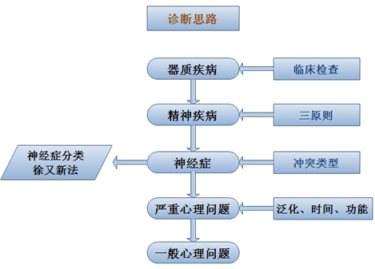

00:00
第二节 初步诊断
第一单元 确定造成求助者心理与行为问题的关键点
一、学习目的
二、工作程序
（一）按表分类收集临床资料（铭刻脑中的表）。
（二）进行对比分析
（三）找到引起心理问题的关键点。
1、该因素是多数临床表现的原因或者与多数临床表现有内在联系。
2、该因素在个体发展中持久地存在并随着生活环境的变化改变自身的形式，但无论形式如何改变其本身性质不变。
08:23
第二单元 对求助者形成初印象对一般心理健康水平进行分析（新加）
一、初步印象
对求助者的心理和行为问题就严重程度和归类诊断方面，形成大致的判断，这称之为初步印象。
二、工作程序
（一）根据“心理健康水平评估的十项指标”，对求助者心理健康水平进行衡量。
（二）选择有效地测评工具对求助者的问题进行量化的系统评估。
（三）完成上述工作之后，再对某些含混的临床表现进行鉴别诊断，一般心理问题、严重心理问题和神经症性心理问题。
11:45
第三单元 确定求助者的问题是否属于健康心理咨询的范畴
一、学习目的
二、工作程序
（一）掌握判断正常与异常的心理活动的三项原则
1、主观世界与客观世界的统一性原则
2、精神活动的内在协调一致性原则
3、个性的相对稳定性原则
（二）对求助者具有典型意义的某些特意行为表现进行定性（1、典型的特异性表现。2、求医者为。3、对症状的自知力）
（三）确定工作范围（新加部分）
1、明确自己的胜任力，取得相应资质。
2、理论上，健康心理咨询的主要对象是一般心理问题、严重心理问题和部分神经症性问题。
3、对精神病性问题，心理咨询师只能进行有条件的辅助性工作。
4、慎重对待出现神经症性问题的求助者和能够确诊为神经症的求助者。
（1）能够确诊为神经症的求助者。
（2）一些精神病性问题的早期症状可能不典型。
23:43
（四）不属于心理咨询范围的问题的处理 （如离婚、股票）
| 一般心理问题 |
严重心理问题 |
神经症（疑） |
不强烈现实刺激
常型的心理冲突 |
现实强烈的
常型 |
与现实刺激无关
变形的心理冲突 |
不良情绪持续1月
或间断2个月 |
2—6个月
泛化 |
3月至持续 |
| 社会功能轻度受损 |
受损较重 |
严重受损甚至无法工作 |
| 人格完整 |
某方面缺陷 |
有人格缺陷 |
29:43
第四单元 一般心理问题的诊断
一、学习目的
二、工作程序
（一）分析求助者问他是否有器质病变作基础。
（二）根据区分正常与异常心理学原则和精神疾病性症状(三原则），与精神病性问题相鉴别。
（三）分析求助者的内心冲突类型，与神经症性问题相鉴别（徐又新）。
（四）分析求助者情绪是否泛化与严重心理问题相鉴别。
（五）确定求助者心理问题持续时间、心理、生理及社会功能影响程度。
（六）形成初步诊断。
32:12
第五单元 严重心理问题的诊断
一、学习目的
二、工作程序
（一）分析求助者问题是否有器质性病变作基础。
（二）根据区分正常与异常心理学原则和精神疾病性症状，与精神病性问题相鉴别。
（三）分析求助者的内心冲突类型，与神经症性问题相鉴别。
（四）分析求助者情绪是否泛化。
（五）确定求助者心理问题持续时间、心理、生活及社会功能影响程度，有关严重心理问题的特点。
（六）形成初步诊断。
注意事项
（一）严重心理问题的诊断，要力求与神经症性心理问题相鉴别。
（二）心理冲突的性质，对鉴别诊断有重要意义。
（三）通常情况下，对青年人来说，关系到个人发展前途的事件，大致都属于高强度刺激。
（四）在分析情绪是否泛化时，要注意区分泛化与心境对人的影响的区别。
34:02
第六单元 提出心理评估报告
一、学习目的
二、工作程序
（一）临床资料的核实 一般使用调查法
（二）评估求助者的心理、生理及社会功能状态。
所谓评估实际上是要求咨询师确定求助者心理、生理及社会功能的哪方面出了问题，其表现程度如何，引发问题的关键点和原因是什么。
（三）导致心理问题的原因分析
心理咨询师还必须探明引发心理问题的原因，既要做原因诊断。
不同学派的观点。如：精神分析学派强调潜意识中的冲突，童年时期的情结；行为主义学派强调条件反射的形成；认知理论则强调不恰当的认知评价方式等等。主张，因人而异、灵活运用。
34:25
诊断思路
